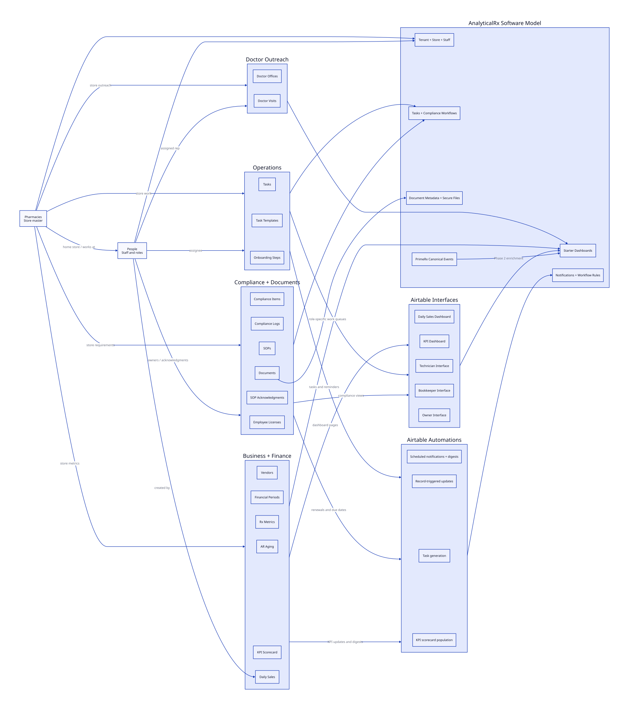

Airtable Setup Review
Metadata-only review of the client Airtable base and how its structure should translate into the AnalyticalRx software model.
Review Scope
Codex accessed Airtable metadata only: table names, field names, field types, linked-record relationships, and views. No record values were fetched.
Do not fetch Airtable records until the client confirms whether the base contains PHI, whether Airtable is covered by the right HIPAA configuration, and what data we are allowed to migrate or inspect.
The base contains 19 tables. It is not only an analytics dashboard model. It is a lightweight pharmacy operating system covering stores, employees, tasks, compliance, SOPs, documents, doctor outreach, vendors, financial reporting, and KPI tracking.
Setup Diagram

Main Product Modules Found
| Module | Airtable tables | What this means for our product |
|---|---|---|
| Store and staff master data | Pharmacies, People |
We need first-class tenant, pharmacy/store, and staff/user models. Most other records hang off a pharmacy and often a person. |
| Task management | Tasks, Task Templates, Onboarding Steps |
The product should support assigned tasks, due dates, priority, status, recurrence/templates, proof documents, and store-specific views. |
| Compliance operations | Compliance Items, Compliance Logs, Employee Licenses |
Compliance is a core workflow, not a side table. It needs due dates, owners, renewal tracking, license data, cost, logs, and exceptions. |
| SOP and document control | SOPs, SOP Acknowledgments, Documents |
We need document metadata, secure file storage, SOP versioning, employee acknowledgment tracking, and document expiration reminders. |
| Doctor outreach / local growth | Doctor Offices, Doctor Visits |
The product should include a simple CRM-style workflow for prescriber offices, visits, follow-ups, referral status, and assigned reps. |
| Vendor and contract tracking | Vendors |
Vendor contracts, contacts, renewal dates, annual value, auto-renew flags, and ratings should be modeled separately from pharmacy financials. |
| Financial and KPI reporting | Financial Periods, Rx Metrics, AR Aging, KPI Scorecard, Daily Sales |
These are the current dashboard inputs. Some are likely manual today and should later be replaced or enriched from PrimeRx API, webhooks, SFTP, POS, or accounting feeds. |
Table Inventory
| Table | Purpose | Important fields observed | Primary relationships |
|---|---|---|---|
Pharmacies |
Store master record. | Name, code, address, NPI, NCPDP, DEA number, state license, status, opened date. | Central hub linked to people, tasks, compliance, SOPs, documents, doctor offices, vendors, financials, metrics, onboarding, KPI, and daily sales. |
People |
Employee/staff directory. | Name, email, phone, role, home store, also works at, employment status, hire date. | Linked to tasks, compliance ownership/logging, SOP ownership/acknowledgment, doctor visits, licenses, onboarding, and daily sales creation. |
Tasks |
Operational work tracking. | Title, description, store, category, priority, status, assignee, due date, completed date, recurrence, source, proof of completion. | Linked to stores, people, related tasks, and templates. |
Task Templates |
Reusable task definitions. | Task title, responsible role, store scope, frequency, category, priority, days offset, active flag, suggested instructions, auto-assign logic. | Linked to generated or related tasks. |
Compliance Items |
Compliance requirement tracker. | Requirement, store, category, license number, issuing authority, issue date, due date, frequency, renewal lead time, owner, cost, status. | Linked to stores, owners, compliance logs, SOPs, and documents. |
Compliance Logs |
Operational compliance log entries. | Logged at, logged by, drug name, DEA schedule, expected count, actual count, discrepancy, temperature, exception flag, log type. | Linked to stores, people, compliance items, and supporting documents. |
SOPs |
Standard operating procedure library. | Title, category, owner, status, scope, applies-to stores, current version, document, change summary, published date. | Linked to people, stores, compliance items, and acknowledgments. |
SOP Acknowledgments |
Employee acknowledgment of SOP versions. | Employee, store, version acknowledged, acknowledged date, status, due date. | Linked to employee, store, and SOP. |
Documents |
General document metadata and attachments. | Name, store, folder, tags, file, version, expiration date, permission level, uploaded by, related compliance item. | Linked to stores, people, and compliance items. |
Doctor Offices |
Prescriber office CRM. | Office name, doctor name, specialty, contact, phone, email, store, stage, assigned rep, services pitched, next follow-up, referral status, estimated monthly Rx. | Linked to stores, assigned reps, and doctor visits. |
Doctor Visits |
Visit and follow-up history for doctor offices. | Visit date, office, rep, notes, outcome, next action, next follow-up. | Linked to doctor office and person. |
Employee Licenses |
Employee credential tracking. | License type, license number, state, expiration date, status, employee. | Linked to person. |
Vendors |
Vendor and contract tracking. | Vendor name, category, store, contact, phone, email, contract dates, annual value, payment terms, auto-renew, performance rating. | Linked to store. |
Financial Periods |
Monthly financial performance. | Store, month, Rx revenue, front-end revenue, compounding revenue, MTM revenue, COGS, DIR fees, payroll, rent, other OpEx, EBITDA formulas. | Linked to store. Store-specific views exist. |
Rx Metrics |
Monthly pharmacy operations metrics. | New Rx, refills, generic Rx, brand Rx, compound Rx, MTM interventions, adherence rate, DIR fees, returned Rx, fill rate, wait time, complaints. | Linked to store. Store-specific views exist. |
AR Aging |
Accounts receivable aging by payer. | Month, payer, 0-30, 31-60, 61-90, 91-120, over 120, disputed, clean claim rate, average days to collect. | Linked to store. |
Onboarding Steps |
New store onboarding workflow. | Step title, new store, category, assignee, sequence, due date, status, document, notes. | Linked to store and person. |
KPI Scorecard |
Target vs actual KPI tracking. | Store, month, KPI, actual, target, direction, weight, variance, status, comparison, prior period, growth. | Linked to store. |
Daily Sales |
Daily store sales snapshot. | Store, date, total daily sales, prescription volume, vaccine count, front-end sales, created by, notes, AI-generated trend fields. | Linked to store and creator. |
Software Replication Approach
We should not replicate this as a generic Airtable clone. The right approach is to preserve the business objects and relationships while building a real application model with typed tables, permissions, audit history, and dashboard-specific views.
- Use
Pharmaciesas the store/location master and connect it to the existing tenant/store design. - Use
Peopleas staff profiles and eventually connect approved staff to application users/roles. - Build task, compliance, SOP, and document workflows as operational modules.
- Use financial, Rx metric, AR aging, daily sales, and KPI tables as starter dashboard inputs.
- Later replace or enrich manual metrics with PrimeRx webhook/API/SFTP data once those feeds are available and validated.
Recommended Phase 1 Deliverables
| Deliverable | Why it matters | Airtable source |
|---|---|---|
| Store and staff setup | Every dashboard and workflow needs tenant, pharmacy, and staff context. | Pharmacies, People |
| Starter operations dashboard | Gives the client immediate visibility into tasks, overdue work, owner workload, and store status. | Tasks, Task Templates, Onboarding Steps |
| Compliance dashboard | Compliance has real due dates, owners, documents, exceptions, and renewals. | Compliance Items, Compliance Logs, SOPs, SOP Acknowledgments, Employee Licenses |
| Document registry | Airtable attachments should become secure files plus searchable metadata, not database blobs. | Documents, document fields across compliance/SOP/task tables |
| Basic financial and KPI dashboards | These match what the client already tracks and can work before advanced analytics are ready. | Financial Periods, Rx Metrics, AR Aging, KPI Scorecard, Daily Sales |
Phase 2 Direction
- Use PrimeRx webhook/API/SFTP data to automate parts of
Rx Metrics,Daily Sales, AR, payer, and drug-level reporting. - Move from manual KPI entry to calculated KPI scorecards where reliable source data exists.
- Add analytics and forecasting only after the Phase 1 operational model and ingestion quality are stable.
- Treat Airtable AI text fields as ideas for future generated insights, not as initial source-of-truth fields.
Data And Security Notes
- Metadata review did not pull record values, so no patient or employee records were copied into this repository.
People,Doctor Offices,Vendors, and attachment fields may contain personal or sensitive business contact data.Compliance Logsinclude drug names and controlled-substance style fields. We need client confirmation before importing records.- Attachment fields can contain unknown document content. Files should move to restricted object storage with metadata in the database.
- Notes/comments fields should be reviewed carefully because free text can contain PHI even when the schema itself does not require it.
Questions For Client Review
- Which Airtable tables are actively used today, and which are prototype/sample tables?
- Which Airtable views are operationally important and must be mirrored in the product dashboard?
- Are any record values or attachments in this base PHI or otherwise sensitive?
- Can the client provide a sanitized export for development and mapping?
- Which fields are manually entered, calculated in Airtable, or imported from another system?
- For financial, Rx metrics, AR aging, KPI, and daily sales tables, what is the current source of truth?
- Should doctor outreach and vendor tracking be part of MVP, or should they follow after core operations/compliance/financial dashboards?
- Who should be allowed to see financial data, staff/license data, compliance documents, and doctor outreach data?
- What retention rules apply to documents, compliance logs, licenses, SOP acknowledgments, and task proof attachments?
Implementation Implications
The PrimeRx canonical event schema remains the ingestion backbone. The Airtable review adds the application-side model we need around that data: stores, staff, tasks, compliance, documents, outreach, vendors, and dashboard inputs.
The clean product direction is to build Phase 1 around operational visibility and starter dashboards, then progressively automate the financial/Rx/AR/KPI tables from PrimeRx and other approved feeds.